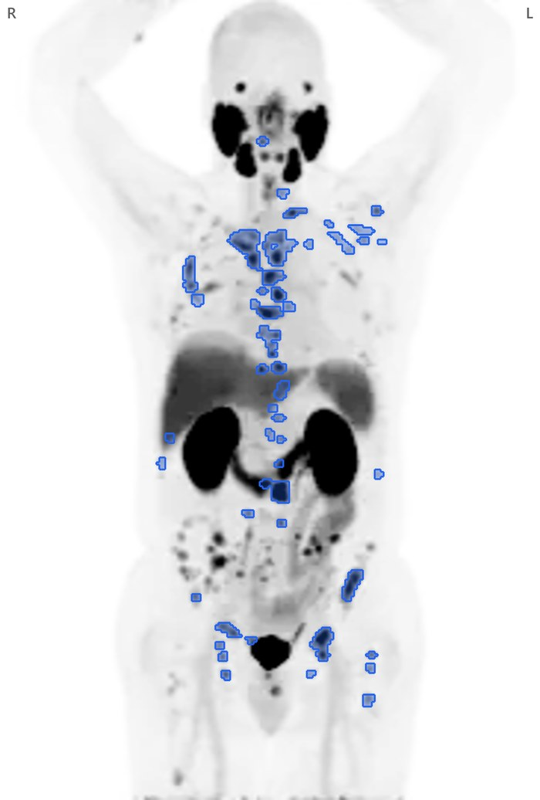
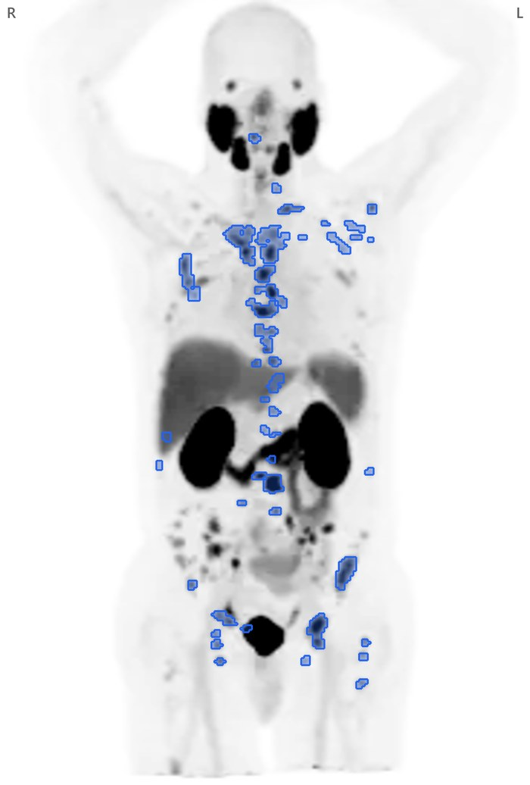

Artificial intelligence · Molecular imaging
AI-guided quantitative PSMA-PET image analysis.
I study how artificial intelligence can support reliable measurements from PSMA-PET images for prostate cancer. My work focuses on the clinical utility and test–retest repeatability of uptake, volume, and radiomic features, often extracted from AI-guided lesion segmentations.
Zobaer Islam, PhD · Research InstructorDepartment of Radiology · Division of Nuclear Medicine
University of Texas Southwestern Medical Center
Dallas, TX, USA
One shared cohort.
Several questions about reliability.
Paired PSMA-PET scans of men with metastatic prostate cancer provide a common foundation for my research. I study the test–retest repeatability of quantitative feature families—including measures of uptake, lesion volume, and image texture—extracted from prostate cancer lesions, often using AI-guided segmentation.
I also explore which features are clinically meaningful, including their potential to predict important outcomes. For measurements to support reliable clinical use, they must be both meaningful and repeatable: understanding measurement variability helps distinguish genuine changes in disease from noise.
Explore the research

Selected publications
Recent work
- 2026
Test–Retest Repeatability of Peripheral Ganglion Uptake on ¹⁸F-DCFPyL PET/CT: Implications for Interpreting Benign Uptake on PSMA PET
Physiologic uptake · Quantitative PSMA-PET
- 2026
- 2026
Toward a structured imaging reporting system for kidney masses: The molecular imaging perspective on KI-RADS
Molecular imaging · Kidney cancer
Academic updates
All updates- Presented PSMA-PET radiomic feature repeatability research at the World Molecular Imaging Congress in Salt Lake City.
- Published a molecular imaging perspective on KI-RADS in Molecular Imaging and Biology.
- Published research on the test–retest repeatability of AI-guided PSMA-PET lesion measurements in Tomography.
- Published a review on target-driven, AI-enabled cancer therapy in Diagnostic and Interventional Imaging.